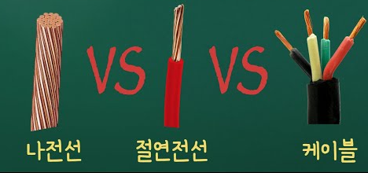

2. 전선
1. 전선의 식별
| 상 (문자) | 색 상 |
|---|---|
| L1 | 갈색 |
| L2 | 검정색 |
| L3 | 회색 |
| N | 파란색 |
| 보호도체 | 녹색-노란색 |
색상 식별이 종단 및 연결 지점에서만 이루어지는 나도체 등은 전선 종단부에 색상이 반영구적으로 유지될 수 있는 도색, 밴드, 색 테이프 등의 방법으로 표시해야 한다.
2. 전선의 종류

가. 고·저압 전선 및 케이블
• 저압 절연전선
「전기용품 및 생활용품 안전관리법」의 적용을 받는 것 이외에는 KS에 적합하거나 동등 이상의 성능을 만족하는 것을 사용하여야 한다.
※ '23.7.11 KEC 일부 개정
• 저압 케이블
사용전압이 저압인 전로(전기기기 안의 전로를 제외한다)의 전선으로 사용하는 케이블은 「전기용품 및 생활용품 안전관리법」의 적용을 받는 것 이외에는 KS에 적합하거나 동등 이상의 성능을 만족하는 것을 사용하여야 한다.
※ '23.7.11 KEC 일부 개정
• 고압 케이블
사용전압이 고압인 전로(전기기기 안의 전로를 제외한다)의 전선으로 사용하는 케이블은 KS에 적합하거나 동등 이상의 성능을 만족하는 것을 사용하여야 한다.
※ '23.11.21 KEC 일부 개정
나. 특고압 케이블
1) 사용전압이 특고압인 전로(전기기기 안의 전로를 제외)의 전선으로 사용하는 케이블
- 가) 절연체가 에틸렌 프로필렌고무혼합물, 가교폴리에틸렌 혼합물, 폴리프로필렌 혼합물인 케이블로서 선심 위에 금속제의 전기적 차폐층을 설치한 것.
- 나) 파이프형 압력 케이블·연피케이블·알루미늄피케이블
- 다) 그 밖의 금속피복을 한 케이블 또는 동등 이상의 성능을 만족하는 것.
2) 사용전압이 고압 및 특고압인 전로(전기기기 안의 전로를 제외)의 전선으로 절연체가 폴리프로필렌 혼합물인 케이블을 사용하는 경우 다음 기준에 적합하여야 한다.
- 가) 도체의 상시 최고 허용온도는 90℃ 이상일 것.
- 나) 절연체의 인장강도는 12.5 N/㎟ 이상일 것.
- 다) 절연체의 신장률은 350% 이상일 것.
- 라) 절연체의 수분 흡수는 1mg/㎠ 이하일 것. (단, 정격전압 30kV 초과 특고압 케이블은 제외)